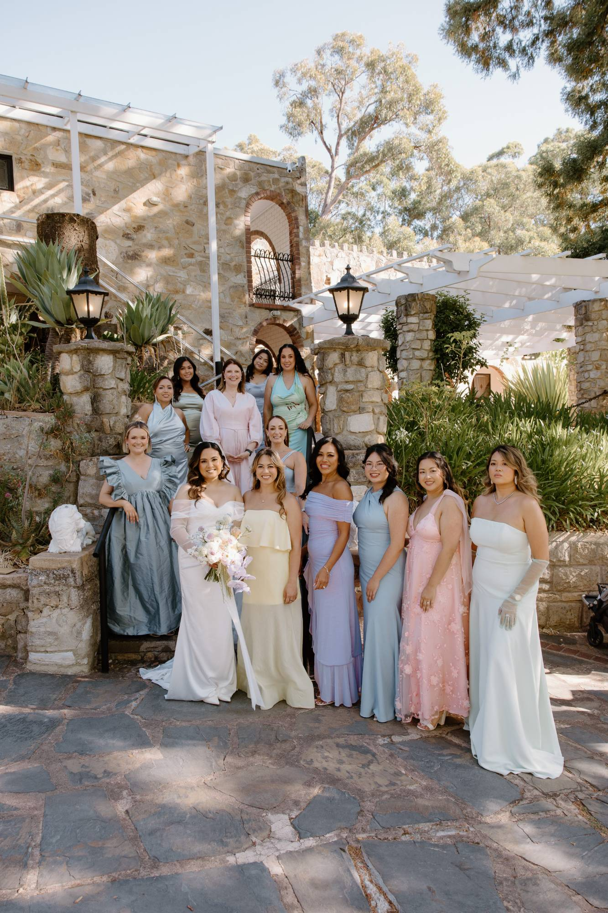
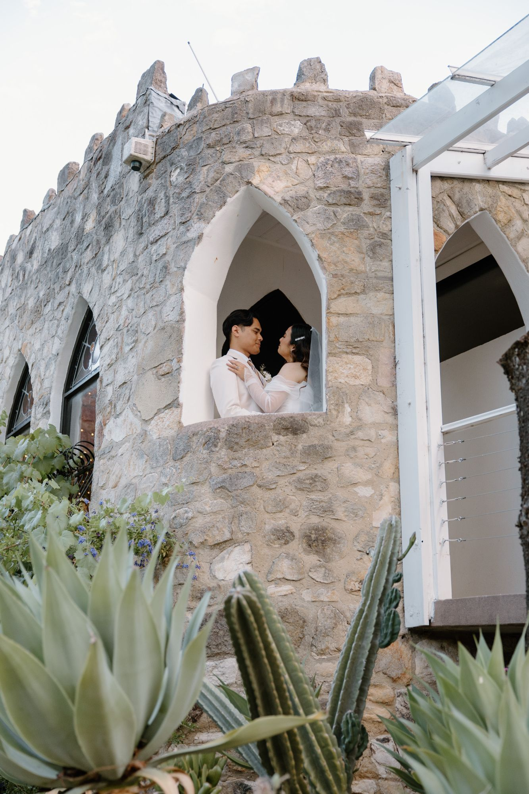
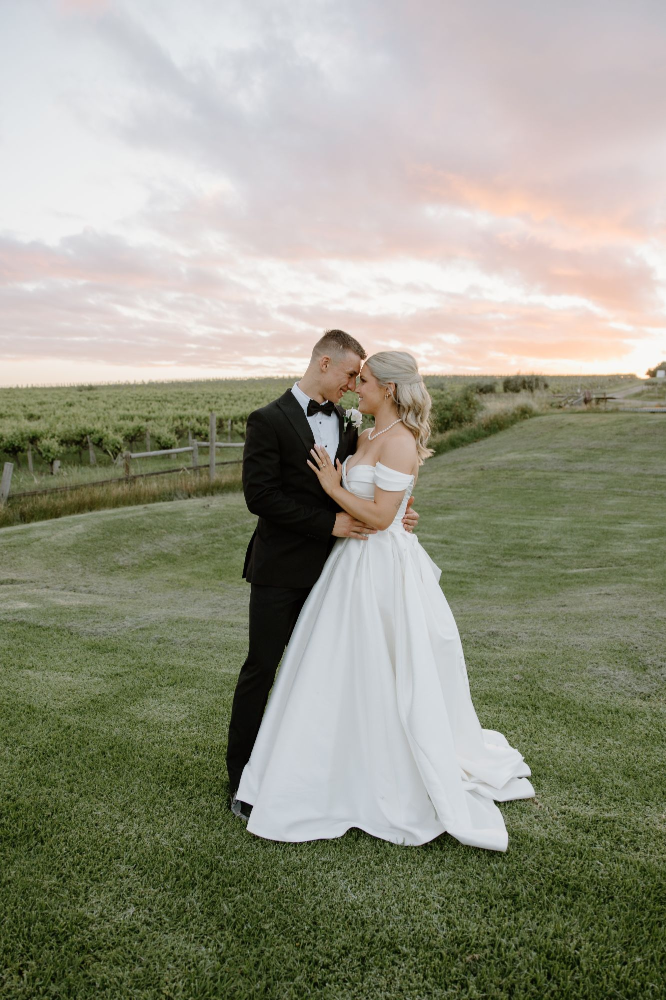

Gallery
A few
favourite days.
Stories from around Adelaide. The newest sessions go up on Instagram first.



Your people
Your favourite people, the petals and the champagne.



The two of you
Stone walls, bougainvillea and a minute to yourselves.



Golden hour
The hour before sunset, when the light goes low and warm.


Your day,
in this light.
Tell me a little about what you’re planning. I’ll get back to you with availability and pricing.
- Based in Adelaide
- Coast, hills & home
- Weddings from $1,700